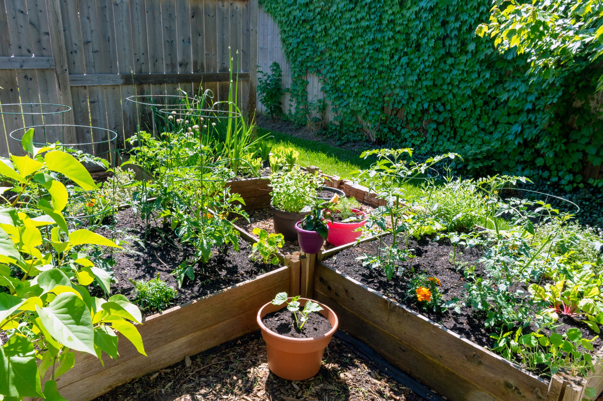

Design a Resilient Garden
Build one garden in May, then keep managing the same system as weather, plants, and water needs change through the season.
As the season changes, experiment with irrigation amount and mulch together. Can you maintain adequate root-zone moisture without simply adding more water?
Your garden changed—and so did the management decisions.
Resilience was not one perfect choice made in May. It came from observing conditions, matching management to plant needs, and adjusting as the season changed.
🍂 Mulch changes the water balance
Mulch does not supply water. It slows water loss, which can allow a lower irrigation amount to maintain similar root-zone moisture than bare soil under the same conditions.
💧 Irrigation amount still matters
Plants differ in water demand. When bare soil dries quickly, a higher irrigation amount may compensate; with mulch, the same crop may maintain moisture with less applied water. Root-zone conditions determine whether an adjustment is useful.
☀️ Short-term protection is situational
Temporary shade or supplemental water can help during extreme heat, but those tools are most useful when conditions and plant needs support them.
Carry this into your own garden
When conditions change, ask: What am I observing? What is this plant likely to need now? Has my earlier management changed the soil-water environment?